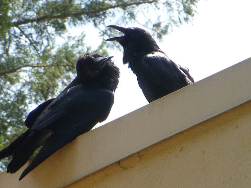

Diet
Crows are highly adaptable birds with omnivorous diets, and their specific diet in Northern California can vary based on the season, availability of food, and local habitat. Generally, a crow's diet may include:
1. Insects: Crows feed on a variety of insects, including beetles, grasshoppers, caterpillars, and other small invertebrates.
2. Small Vertebrates: They are known to eat small vertebrates such as rodents, small birds, and bird eggs.
3. Carrion: Crows are scavengers and often consume carrion (the flesh of dead animals). They play a crucial role in cleaning up the environment by removing carcasses.
4. Fruits and Seeds: Crows have a diverse diet that includes fruits, berries, and seeds. They are opportunistic feeders and will eat whatever is available.
5. Human Food: Crows are adaptive to urban environments and may scavenge human food from garbage bins or other sources in urban and suburban areas.
6. Crops and Agricultural Produce: In agricultural areas, crows may feed on crops and agricultural produce, which can sometimes lead to conflicts with farmers.
7. Nuts: Crows can crack open nuts using their strong beaks, including hard-shelled nuts like walnuts.
8. Human Interventions: Crows are known to exploit human activities. For example, they may visit picnic areas or outdoor eating spaces to scavenge for leftover food.
Crows are highly intelligent birds, and their ability to adapt to various food sources contributes to their success in a wide range of environments. Their diet can also be influenced by local conditions, the availability of food resources, and the presence of other competing bird species.
Habitat


Crows are highly adaptable birds and can be found in a variety of habitats, including urban, suburban, and rural areas. In Northern California, crows can be commonly observed in the following habitats:
1. Urban and Suburban Areas: Crows are highly adaptable to human-modified environments. They thrive in cities and suburbs, taking advantage of the abundant food resources, including human waste and discarded food.
2. Wooded Areas: Crows are often found in wooded areas, including forests and wooded parks. These environments provide roosting sites and natural food sources.
3. Open Fields and Grasslands: Crows may inhabit open fields and grasslands, where they can find a variety of food sources, including insects, small vertebrates, and seeds.
4. Coastal Areas: In coastal regions of Northern California, crows may be found near shorelines, taking advantage of marine life and human activities along the coast.
5. Agricultural Lands: Crows can be observed in agricultural areas, where they may feed on crops and agricultural produce. However, their presence in these areas can sometimes lead to conflicts with farmers.
Crows are opportunistic and adaptable birds, which allows them to thrive in diverse habitats. Their adaptability to urban environments has contributed to their success in coexisting with human populations across various landscapes in Northern California.
Bio
1. Tool Use and Problem-Solving Skills: Crows are known for their exceptional intelligence and problem-solving abilities. They have been observed using tools, such as sticks, to extract insects from tree bark or even creating makeshift tools by modifying existing objects. This ability to use tools for specific tasks is a behavior not commonly seen in many bird species. 2. Complex Communication: Crows have a sophisticated system of communication. They use a variety of vocalizations to convey different messages, and they can even mimic sounds from their environment, including the calls of other bird species and human-made noises. Crows are also known for their ability to recognize and remember human faces. 3. Funeral Behavior: There have been observations suggesting that crows engage in what appears to be "funeral" behavior. When a member of their group dies, crows may gather and exhibit behaviors that resemble mourning. While the exact reasons for this behavior are not fully understood, it suggests a level of social complexity and emotional depth in these birds. 4. Playful Behavior: Crows are playful birds, especially when they are young. They engage in games such as dropping and catching objects, aerial acrobatics, and even sliding down snow-covered roofs. Play is thought to be important for the development of cognitive and physical skills in young crows.